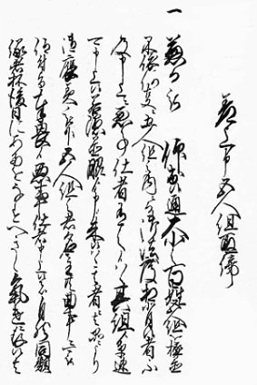

| 見たい項目をクリックして下さい | |||||||||
|
| 会員からの投稿（詳細-６） |
| 古文書の会に参加して |
|
|
8月から、井上先生を講師に迎えて開かれている古文書の会に参加する事ができました。 今回使用されている文書は「五人組帳 前書き」といわれるもので、近世農村の取り決めを集大成したものです。当時の村の生活実態を知ることができる史料です。文書はわたしには読むのがとても難しいです。とにかくついていくしかない実践あるのみの感です。区切りごとに先生が解説してくださいます。 などなどは、私にすれば「○○の泉」ではありませんが、「へえ〜」と何回も心の中でつぶやくのです。進み方はゆっくりでも、当時の村の実態を学びつつ同時に近世の社会を学んでいくよき機会を得られたと思っております。 これからもよろしくお願いいたします。 |
 |
| 投稿の一覧表 に戻る |